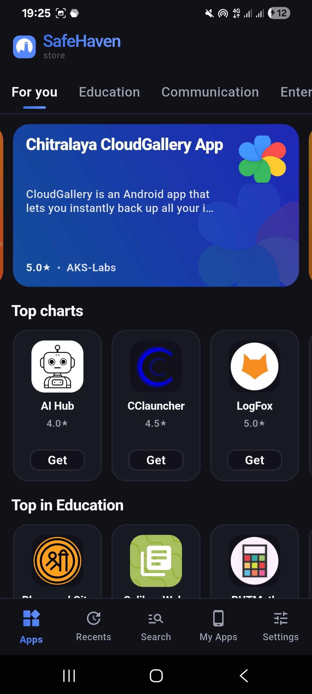
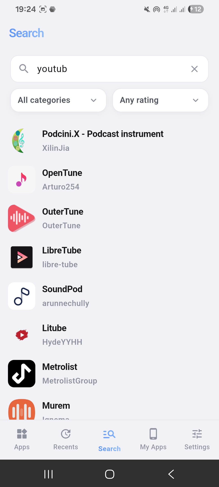

Safe Haven 避坑指南：我踩过的四个坑，帮你省点时间
Safe Haven 用着顺手但细节上有几个容易踩的坑——签名变更导致更新失败、评分提不上去、扫描结果过期、搜不到应用，每个坑都有解法。
Safe Haven官网 主打一个"干净点的应用商店"，装上就能用。但我折腾了差不多两个月，从装到卸再装、从手动查哈希到翻后台日志，四个坑印象尤其深——写出来希望你别像我一样挨个踩一遍。
坑一：更新提示有新版本，但装不上
这是我遇到的第一个，也是最花时间的一个。Safe Haven 客户端显示某个应用有新版本推送，点进去装却被安卓拦住："应用未安装"或者直接静默失败。我当时第一反应是 APK 损坏，重下了三次还是一样。
后来去 Safe Haven文档 翻了一下才明白——你设备上装的版本和商店里新版的签名密钥不一致。Safe Haven 有一套叫"签名锁定"的机制：应用第一次进目录时，扫描管线会把它的签名证书 SHA-256 哈希存下来当基准，之后每次扫到新版都拿新哈希和基准比，不一样就把 signing_key_changed 标志置为 true，客户端详情页上"签名锁定"那个图标会变暗。
这时候 Safe Haven 的统一 Poller 会暂停这个应用的自动同步，开发者也不能直接上传新签名的版本，必须管理员手动覆盖签名基准哈希。从用户这边看，就是新版推了但永远装不上。

解法就一条：卸载旧版再装新版。安卓系统只允许同签名覆盖安装，签名换了之后别无选择。操作上记得先备份应用数据，然后卸载旧版、从 Safe Haven下载 装新签名的版本。等管理员那边处理完签名覆盖，Poller 恢复同步，后面就正常了。
还有个坑中坑：签名锁定被重置之前，统一 Poller 是暂停状态。所以即使管理员当天就处理完哈希覆盖，你客户端里新版推送可能要等几小时甚至一天才出现。我当时以为管理员没干活，其实是同步管道在等着。
坑二：评了星，但榜单排名没变
觉得某个应用好用，给了五颗星，回头一看 Top Charts 还是老样子。等了一下午也没变化，怀疑是不是评分功能坏了。
去排查文档翻了一圈才搞清楚 Safe Haven 评分的几个硬限制，我当时中了其中两个。
第一个是每设备每应用只能评一次。客户端首次评分会生成一个设备唯一 token，提交时发的是 SHA256(token + 包名) 哈希值，服务端存这个哈希——同一个哈希再出现就直接忽略。你看不到任何"已评过"的提示，客户端可能连评分按钮都不让你再点。我因为对之前打三星不满意想改五星，才发现根本改不了。
第二个是每 IP 每小时最多十次。这个限制是共享的——同一根 Wi-Fi 下所有设备共用这十次额度。当时我给四五个应用评了分，再评第六个的时候服务端就拒了。限频窗口是滚动的，等一小时就恢复，但这个"一小时"是从你最后一次提交起算，不是整点钟。
至于榜单为什么不变，那是因为 Safe Haven 的 Top Charts 是设备端实时算的。你提交的评分先到服务端入库，然后等索引更新（通常是几分钟到几小时），之后其他设备下次同步索引时才能拿到新的 ratingSum 和 ratingCount。客户端自己的索引没更新，榜单当然还是旧的。
想绕过去？ 目前官方没提供修改评分的功能。真要重新评的话，卸 Safe Haven 再装能重新生成 device token，但不推荐这么做——会丢其他设置。IP 限频等一小时自然解除，或者切一下 Wi-Fi 到移动数据也行。
坑三：扫描结果显示"几个月前"
点开某个应用详情页，VTTI 扫描时间戳是四个月前。其他应用都是一两周内的新扫描，这一个怎么回事？
Safe Haven 在 v2.0.9 之后把扫描管线的更多中间结果放出来了，详情页上能看到扫描状态、SHA-256 哈希、签名哈希、VTTI 摘要这些。正常情况下，上架后复扫管线会定期重新拉所有已上架应用的 APK 跑一遍完整管线——重新算哈希、更新时间戳、提取图标。
但复扫管线不是百分之百可靠。文档里列了几个跳过条件：包名匹配异常、临时下载失败、APK 结构变了导致提取器报错。你看，扫描结果过期不代表这个应用有问题，只说明复扫管线对它跳过了。还有一种情况是社区分支去掉了 VX-TITANIUM 引擎的 .so 库和 ML 定义包，扫描器会自动降级为纯哈希加证书提取——这种情况下扫描结果会比有引擎时简单，但不会影响核心的签名锁定和哈希比对。
我当时慌了一阵，以为那应用藏了东西没被扫出来。后来翻了一下扫描管线的架构图才明白：降级不等于不扫，只是少了字节结构解析那一步。核心功能不受影响，该比对签名还是比对签名，该查恶意哈希还是查恶意哈希。
如果真想确认，可以自己算一下 APK 的 SHA-256 哈希，和详情页上显示的对一下——一致就没问题。不一致的话那才是真的出了状况。

坑四：明明有这个应用，Safe Haven 里搜不到
朋友推荐了一个应用，名字记得清清楚楚，在 Safe Haven 里搜出来空。换关键词、换分类筛选、甚至直接搜包名，还是空。
Safe Haven 的收录范围有几个硬边界，搜不到大概率是踩了其中一个：
- APK 体积超过 100 MB 的直接进不来
- x86 架构的应用被整体排除（Safe Haven 主打 ARM 生态）
- 同步渠道只收近 12 个月有更新的项目，躺平一年以上的不会再同步
- 商业大厂应用如果既没有开源仓库、也没被 F-Droid 或 IzzyOnDroid 收录，Safe Haven 里大概率没有
还有一个细节是搜索主要匹配英文原名和包名。我第一次搜"雷电模拟器"没结果，换成 lemuroid 就出来了。应用条目里的 summary 简短描述也会参与匹配，但权重不如名字和包名。
来源筛选那里可以精确按信任维度过滤——只看已验证源码的、只看开发者自己提交的、只看有扫描记录的。如果你的搜索条件勾了太多过滤，也可能把目标应用筛没了。先清空所有筛选条件，只用关键词搜一遍，确认应用确实在目录里，再慢慢加过滤条件。
防坑清单
踩完这四个坑，我整理了几条每次开 Safe Haven 前过一遍的速查项：
- 更新装不上先看签名锁定图标——变暗就是密钥变更触发了，卸载重装是唯一解法，别反复下 APK 白费力气
- 评分不满意先忍忍——没改评分功能，卸载重装能重置 device token 但没必要；同 Wi-Fi 下别一口气评超过十个应用
- 扫描结果先看时间戳再慌——几个月前的扫描不一定有问题，先确认 SHA-256 哈希和 APK 文件一致，核心比对没跳过就行
- 搜不到应用先排四个硬边界——100 MB 体积、x86 架构、12 个月无更新、无开源/同步渠道，这四条全过才值得翻排查文档
- 客户端同步有延迟很正常——签名覆盖、索引更新、榜单刷新都是分钟到小时级，别急着重装应用
知道这些坑之后，Safe Haven 其实相当省心——签名锁定帮你挡恶意替换、VTTI 扫描把分析过程公开透明、评分防刷设计保护了榜单质量。只是这些设计不是开箱即用的，得折腾几回才能摸清楚它的脾气。文中提到的签名机制、评分限频、扫描管线等细节资料，我分别同步到了 GitHub、Gitee 和 GitCode 三个仓库，国内访问优先 Gitee 和 GitCode 会快不少。